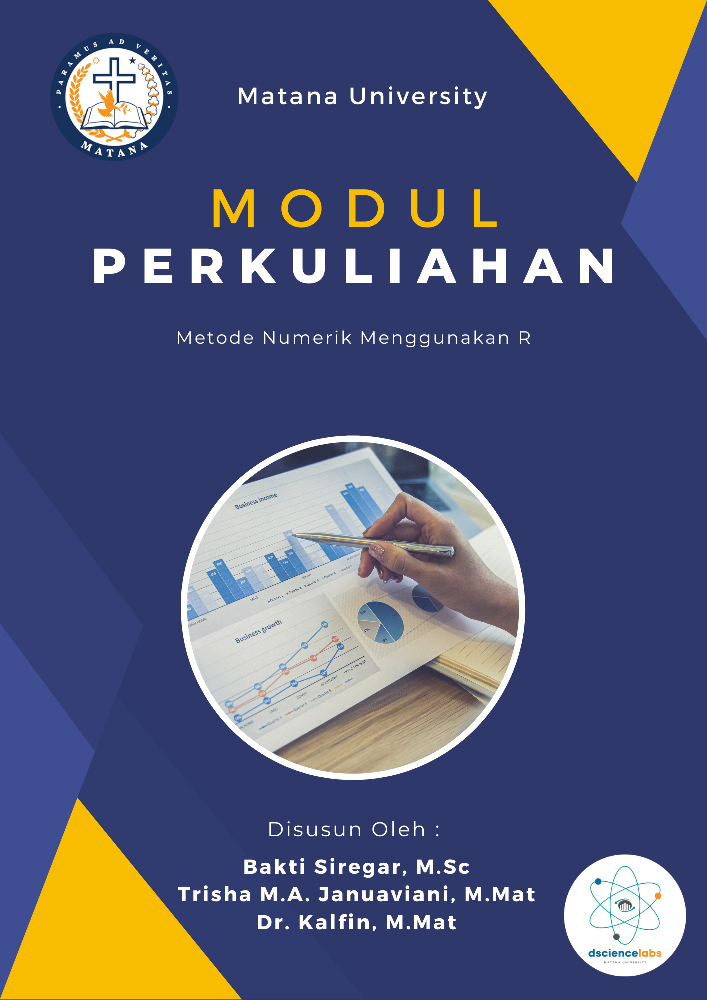

Metode Numerik Menggunakan R
06 Maret 2023
Kata Pengantar

Modul ini dirancang sebagai panduan bagi mahasiswa untuk melakukan praktikum Metode Numerik di Universitas Matana. Beberapa topik penting dalam analisis numerik dibahas dalam buku ini, seperti interpolasi, integrasi numerik, solusi persamaan nonlinear, dan pemecahan sistem persamaan linear. Modul ini dirancang agar mahasiswa dapat memahami konsep dan menerapkan dengan mudah dan praktis melalui studi kasus yang relevan dengan alat bantu bahasa pemrograman R. Setelah mempelajari modul ini, Mahasiswa (Pembaca) diharapkan untuk dapat mengembangkan keterampilan komputasi numerik mereka dalam proses analisis dan penyelesaian masalah, khususnya dalam perhitungan Matematika/Statistika yang lebih kompleks.
Ringkasan
Adapun isi pembahasan dalam modul ini adalah sebagai berikut:
- Pengantar metode numerik
- Aljabar linier
- Akar persamaan non-linier
- Interpolasi dan ekstrapolasi
- Diferensiasi dan integrasi numerik
- Persamaan diferensial
- Analisis data
Catatan: Sebelum mempelajari dan menggunakan modul ini Mahasiswa (Pengguna) diharapkan sudah mempunyai pengalaman yang cukup tentang dasar pemrograman R dan mampu untuk melakukan visualisasi data dengan bahasa pemrograman R.
Tim Penyusun
Berikut ini adalah nama dan biografi singkat para penulis:

- Bakti Siregar, M.Sc adalah Ketua Program Studi di Jurusan Statistika Universitas Matana. Lulusan Magister Matematika Terapan dari National Sun Yat Sen University, Taiwan. Beliau juga merupakan dosen dan konsultan Data Scientist di perusahaan-perusahaan ternama seperti JNE, Samora Group, Pertamina, dan lainnya. Beliau memiliki antusiasme khusus dalam mengajar Big Data Analytics, Machine Learning, Optimisasi, dan Analisis Time Series di bidang keuangan dan investasi. Keahliannya juga terlihat dalam penggunaan bahasa pemrograman Statistik seperti R Studio dan Python. Beliau mengaplikasikan sistem basis data MySQL/NoSQL dalam pembelajaran manajemen data, serta mahir dalam menggunakan tools Big Data seperti Spark dan Hadoop. Beberapa project beliau dapat dilihat di link berikut: Rpubs, Github, Website, dan Kaggle.

- Dr. Kalfin, M. Mat juga seorang dosen Statistika Universitas Matana dengan perjalanan pendidikan yang mengesankan. Beliau menyelesaikan gelar Matematika dari Universitas Padjadjaran pada tahun 2023. Dr. Kalfin memiliki konsentrasi penelitian yang sangat berharga, yaitu Matematika Keuangan dan Aktuaria. Dalam ranah Matematika Keuangan, beliau telah menunjukkan komitmen tinggi dengan melakukan penelitian mendalam mengenai pemodelan optimasi portofolio investasi. Penelitian ini mencakup analisis matematis yang rumit untuk merumuskan strategi investasi yang optimal. Di sisi lain, dalam bidang Aktuaria, Dr. Kalfin juga telah memberikan kontribusi penting melalui penelitian tentang model penentuan premi asuransi bencana. Penelitian ini tidak hanya memiliki dampak praktis dalam industri asuransi, tetapi juga mendorong pemahaman lebih dalam tentang evaluasi risiko dan kebijakan tarif yang berlandaskan pada analisis matematis yang kuat.

- Trisha Magdalena Adelheid Januaviani, M.Mat adalah soerang dosen yang sekaligus menjabad sebagai Sekerataris Program Studi Statistika di Universitas Matana. Sebagai lulusan Magister Matematika dari Universitas Padjadjaran, Beliau telah mengembangkan kompetensi terbaiknya dalam Pengajaran, Penelitian dan Pengabdian Kepada Masyarakat. Penelitiannya difokuskan pada matematika keuangan dan sains data, dua bidang yang penting dalam kehidupan saat ini. Beliau mampu memberikan wawasan berharga tentang penerapan konsep matematika dalam konteks keuangan. Kemampuannya dalam ilmu data juga memungkinkannya menganalisis dan menginterpretasi data dengan cermat untuk pengambilan keputusan yang lebih baik.
Ucapan Terima Kasih
Kami juga ingin mengucapkan terima kasih yang sebesar-sebesar pada semua pihak yang terlibat dalam pengembangan buku ini, yakni; mahasiswa-i, dan dosen Universitas Matana atas dukungan dalam upaya bersama kami dalam merekomendasikan materi untuk modul ini. Ucapan terima kasih juga penulis sampaikan kepada komunitas pengembang packages metode numerik yang karyanya sangat membantu dalam proses menyusun modul ini.
Masukan & Saran
Untuk masukan dan saran perbaikan modul perkuliahan ini dapat disampaikan melalui kontak dibawak ini!
Email: dsciencelabs@outlook.com